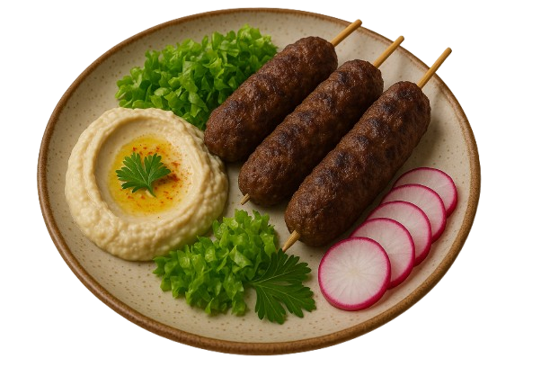

Bem vindos ao restaurante Halim
Inicialmente inaugurado em 1978 no bairro do Brás, em São Paulo, o restaurante Halim é focado na culinária árabe, especialmente libanesa. Atualmente localizado no bairro Paraíso, ele estabelece seu espaço com os mais diversos pratos típicos da região do oriente, trazendo o sabor de casa para muitos imigrantes que frequentam o lugar, além de popularizar a culinária e captar novos clientes na região.
Inicialmente inaugurado em 1973 no bairro do Brás, em São Paulo, o
restaurante Halim é focado na culinária árabe, especialmente
libanesa. Atualmente localizado no bairro Paraíso, ele estabelece seu
espaço com os mais diversos pratos típicos da região do oriente,
trazendo o sabor de casa para muitos imigrantes que frequentam o
lugar, além de popularizar a culinária e captar novos clientes na
região.

Nossa história
Halim Sultan veio do Líbano em 1964. Em seguida, sua esposa Leila e seu filho Issan também vieram, por indicação de um primo, inicialmente para Curitiba, cidade colonizada por alemães que não apreciavam muito a culinária árabe. Após passar por alguns percalços, migraram para São Paulo e em 1972 abriram o primeiro negócio de fato no bairro do Brás com o nome “Oriente”: Um restaurante, uma fábrica de salgados e uma de doces divididos em três andares.
No Brás formaram clientela que trabalhava no bairro, porém morava no Paraíso. Essa clientela, em boa parte de imigrantes necessitava de um restaurante típico e tão bom quanto o deles perto de casa. Diferenciado, o restaurante mantém algumas tradições da cultura árabe com pratos pra lá de especiais.